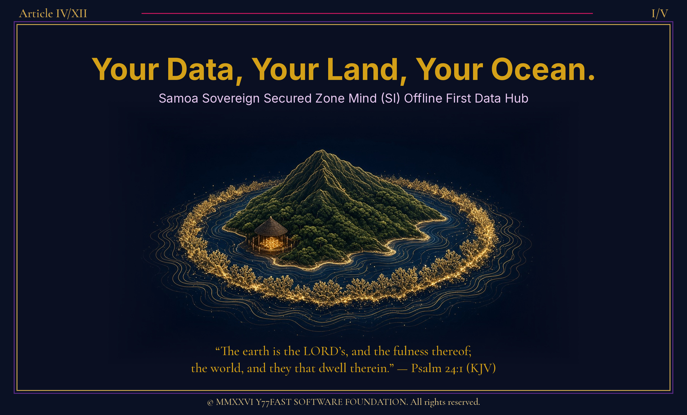
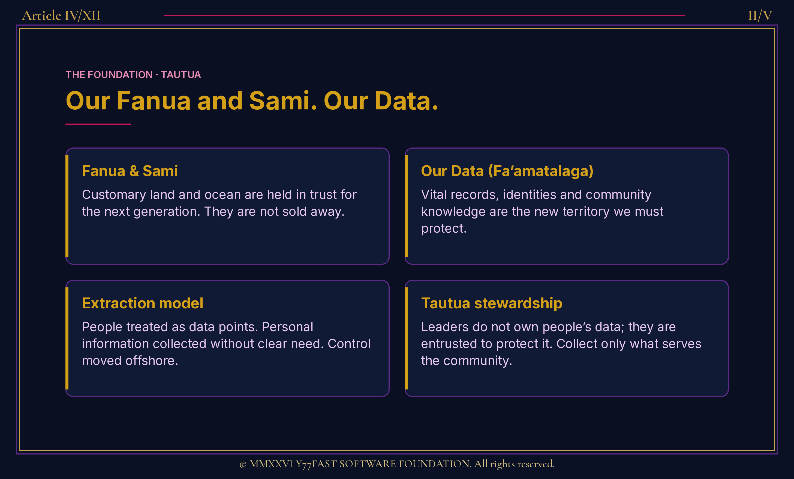
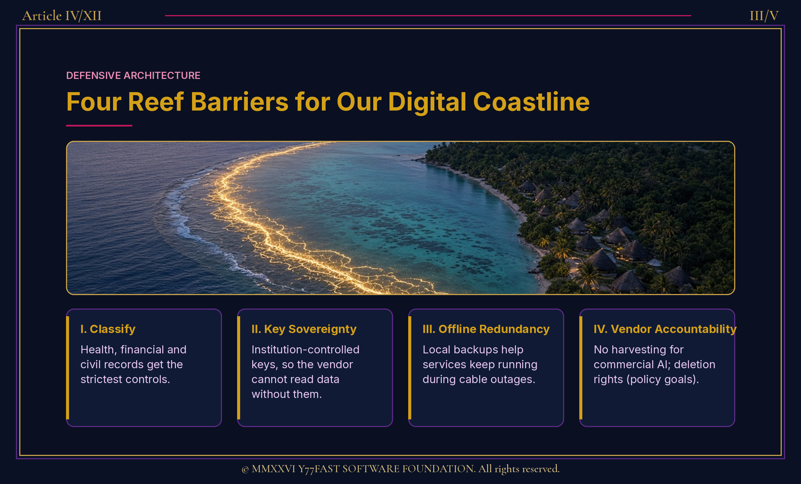
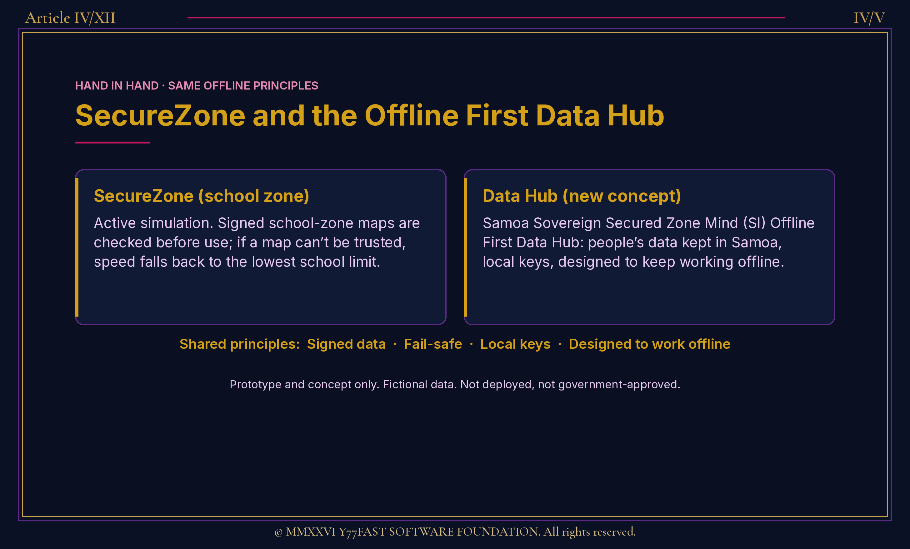
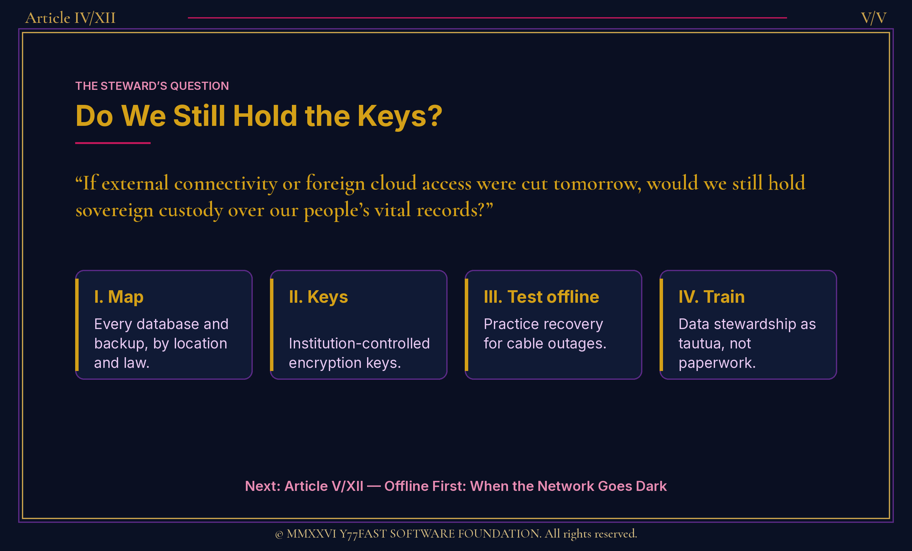

Article IV/XII · DIGITAL ID
Your Data, Your Land, Your Ocean
Samoa Sovereign Secured Zone Mind (SI) Offline First Data Hub
“The earth is the LORD’s, and the fulness thereof; the world, and they that dwell therein.” — Psalm 24:1 (KJV)
Our fanua and sami are held in trust for future generations. Our data deserves the same custody. Leaders do not own people’s data; they are entrusted to protect it. That is tautua. Digital ID is the front door to these records; the keys must stay in Samoa.
Four reef barriers shield the digital coastline:
- Asset Classification: health, financial and civil registry data kept in strict isolation.
- Key Sovereignty: keys the institution controls, so the vendor cannot read data without them.
- Resilient Redundancy: offline-first local storage and backups that help services keep running during cable outages.
- Vendor Accountability: no harvesting of local data for commercial AI, and data deletion rights (policy goals).
Hand in hand: SecureZone (the active school-zone simulation) and the Offline First Data Hub, which keeps Samoa’s Digital ID and vital records in Samoa, share the same principles: signed data, fail-safe behavior, local keys, designed to work offline.
The Steward’s Question: If external connectivity or foreign cloud access were cut tomorrow, do we still hold sovereign custody over our people’s vital records?
Slides I/V–V/V: download the PDF





Data Hub: concept prototype with fictional data. Not deployed and not government-approved.
Contact: y77@favorhumanity.org
Next: Article V/XII — Offline First: When the Network Goes Dark
Favor Figota Taueva · Founder / CEO
Y77FAST SOFTWARE FOUNDATION
SECURE · SPEED · TRUST